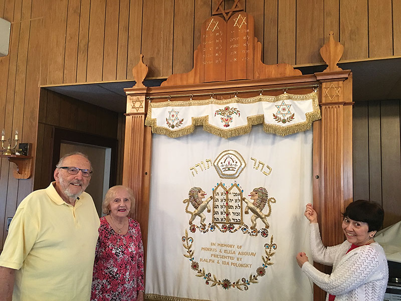

Rabbi
Meet Rabbi Phillip Blue
Learn more about Rabbi Phillip Blue, his approach to Jewish learning, and his work with the CTI community.
Meet Our Rabbi →Congregation Tifereth Israel is a warm and welcoming Jewish community in Peabody, Massachusetts, with deep roots and a distinctive Sephardic heritage.
For more than a century, CTI has been a place for prayer, learning, tradition, friendship, and Jewish life. We welcome people from a wide range of Jewish backgrounds and invite you to join us for services, learning, and community.
Our congregation brings together people from different Jewish backgrounds while continuing to honor the Sephardic customs, melodies, and spirit that remain an important part of our identity.
Learn about CTI
Explore CTI’s interactive memorial board, browse the Hebrew months, and remember the members of our community who came before us.
Visit Our Meldathos Board →
See the full schedule for upcoming monthly Shabbat dates.
Full service schedule →Learn more about Rabbi Phillip Blue, his approach to Jewish learning, and his work with the CTI community.
Meet Our Rabbi →Discover more than a century of Jewish life at Congregation Tifereth Israel and the story of the families who built our community.
Explore our history →Read Rabbi Blue’s latest D’var Torah.
Browse D’vrei Torah →Keep up with upcoming services, congregational news, and community announcements.
Newsletter archive →Help sustain Jewish life at Congregation Tifereth Israel and support the future of our community.
Support CTI →